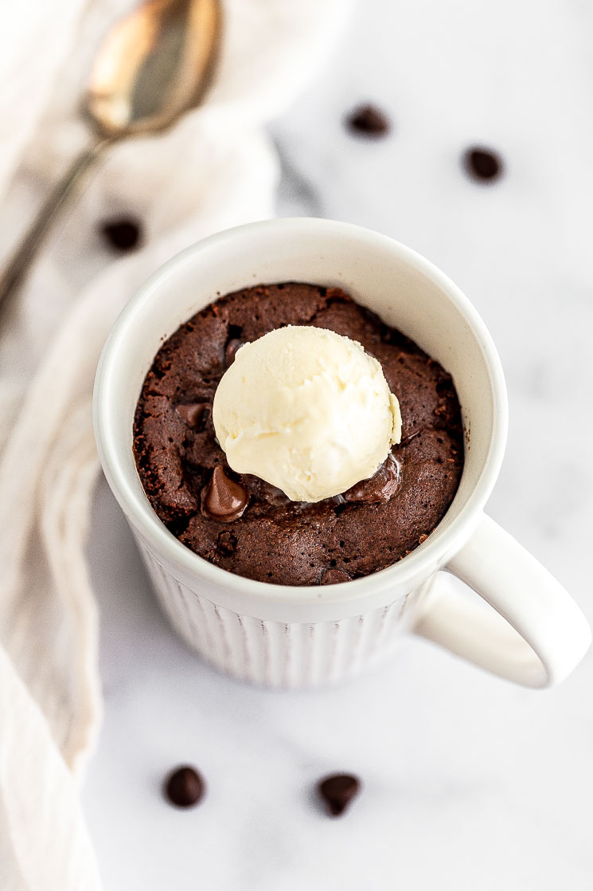

Chocolate Mug Cake

A great easy dessert for one!
When that chocolate craving hits, this recipe is here to save the day. Everyone knows when you have a craving you
don't have the patience to bake an entire cake. That's just one of the reasons this recipe shines!
Ingredients
- All Purpose Flour - 1/4 Cup
- Unsweeted Cocoa Powder - 2 TBSPs
- Granulated Sugar - 3 TBSPs
- Baking Powder - 1/4 TSP
- Salt - Pinch
- Milk - 1/4 Cup
- Oil (Canola, vegetable, etc) - 2 TBSPs
- Vanilla Extract - 1/4 TSP
- Semi-sweet Chocolate Chips - 1 TBSP
Steps
- Grease a 12oz mug with nonstick spray.
- In mug, mix together flour, unsweetened cocoa powder, granulated sugar, baking powder and salt.
- Add milk, oil and vanilla extract to mug. Mix will to combine.
- Sprinkle chocolate chips on top.
- Place mug in microwave and microwave for 60-90 seconds. Until the center of cake is just set.
- Carefully remove mug from microwave and allow to cool before enjoying!